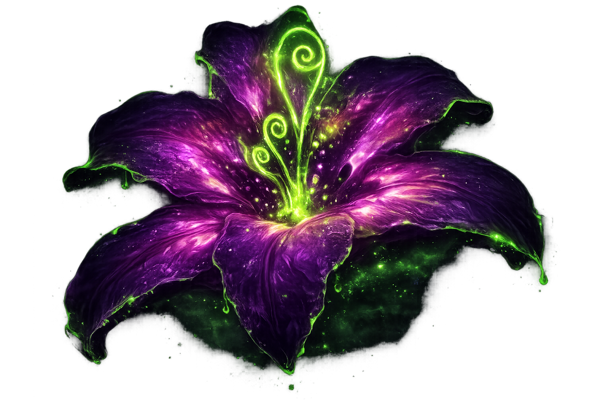

Once upon a time, a single drop of sunlight fell from the heavens. From that drop, a radiant golden flower grew, filled with the power to heal the sick and wounded. An old woman named Mother Gothel discovered it and kept it hidden deep in the forest, using its magic for herself to remain young and beautiful for many years.
In a nearby kingdom, the Queen fell gravely ill while expecting a child. Her condition worsened with each passing day, and the entire kingdom grew fearful. Desperate to save her, the people searched far and wide for the legendary healing flower. At last, they found it, glowing softly in the forest, and brought it back to the castle. A potion was made, the Queen drank it, and she was healed.
Soon after, she gave birth to a beautiful baby girl with long, shining golden hair. They named her Rapunzel.
But Mother Gothel was furious. The flower was gone—but its magic still lived. She snuck into the palace under the cover of night and found the child. When she touched Rapunzel’s glowing hair, she realized the power had transferred. She tried cutting a strand, but it turned brown and lost its magic. Knowing she could not take the power, she took the child instead.
Gothel hid Rapunzel away in a tall, hidden tower deep within the forest, far from the world.
The King and Queen searched endlessly for their lost daughter, but she was never found. In hope and remembrance, every year on her birthday, they released thousands of floating lanterns into the sky—lights meant to guide her home.
Rapunzel grew up believing Mother Gothel was her real mother. She was told the outside world was dangerous, filled with cruel people who would harm her. Yet despite this, Rapunzel grew into a kind, curious, and imaginative young woman. She painted, sang, and dreamed.
Every year on her birthday, she would look out from the tower window and watch the glowing lights drift into the sky. They filled her with wonder—and a longing she couldn’t explain.
On her 18th birthday, she finally gathered the courage to ask.
But Gothel refused, harshly and without hesitation.
That same day, a thief named Flynn Rider fled into the forest with a stolen crown. While escaping guards, he found a hidden tower and climbed inside—Rapunzel’s tower. Before he could react, Rapunzel struck him with a frying pan and tied him up.
Though frightened, she saw something different in him. So she made a deal: he would take her to see the floating lights and return her safely, and she would give back the crown she had hidden.
Reluctantly, Flynn agreed.
As they journeyed together, Rapunzel experienced the world for the first time. The sunlight, the grass, the open sky—it was everything she had imagined and more. Flynn tried to scare her at a rough tavern filled with intimidating strangers, but Rapunzel’s kindness won them over. She listened to their dreams, and in return, they helped her escape danger.
Later, trapped in a cave filling with water, Rapunzel used her glowing hair to light the darkness and find a way out. When Flynn was injured, she healed his wound, revealing her magical power.
Meanwhile, Gothel discovered Rapunzel had escaped and began tracking her. She manipulated events from the shadows, planting doubt in Rapunzel’s mind about Flynn’s true intentions.
Despite this, Rapunzel and Flynn grew closer. He showed her the kingdom—simple joys like books, food, laughter, and freedom. For the first time, Rapunzel felt truly alive.
That night, they set out on a small boat to watch the lanterns. As they floated beneath the glowing sky, Rapunzel realized her dream had come true. In that quiet, magical moment, she gave Flynn back the crown, trusting him completely.
Flynn, in turn, realized he no longer cared about wealth—only about her.
But before anything more could happen, danger returned. Flynn was captured by his former allies and taken away, while Gothel tricked Rapunzel into believing he had betrayed her. Heartbroken and confused, Rapunzel returned to the tower.
Back in the kingdom, Flynn escaped with help and rushed to save her. He climbed the tower and found Rapunzel, but Gothel struck him from behind.
As Rapunzel tried to heal him, she made a desperate bargain—to stay with Gothel forever if she could save Flynn.
But Flynn knew that would mean losing her freedom forever.
So, with his last strength, he cut off her magical hair.
Instantly, Gothel lost her youth and turned to dust. Rapunzel’s golden hair faded to brown, and her healing power disappeared. Flynn began to fade in her arms.
Overcome with grief, Rapunzel wept. A single tear fell onto his cheek—and in that moment, something miraculous happened.
He was healed.
Together, they returned to the kingdom. Rapunzel was reunited with her parents, who instantly recognized their lost daughter. The kingdom rejoiced, filled with light and celebration.
At last, Rapunzel was home.
And Flynn, now changed, asked her to marry him.
She smiled and said yes.
And they all lived happily ever after.
And every year after that, as the lanterns rose into the night sky, Rapunzel would watch them with a quiet smile—not as a dream she longed for anymore, but as a memory of the journey that brought her home, a reminder that even the smallest light can guide someone through the darkest unknown.
In time, the tower in the forest was forgotten, swallowed by vines and silence, as if it had never existed at all. But sometimes, when the wind passed gently through the trees, it carried faint echoes of songs once sung within those walls—songs of hope, of longing,

Once upon a time, a single drop of moonlight fell from the heavens.
From that drop, a cursed flower grew—pale violet and glowing faintly in the dark.
It did not heal… it corrupted. It fed on life, twisting it, preserving beauty while draining the soul.
An old woman named Mother Gothel discovered the flower and hid it deep within the forest.
She whispered to it, sang to it, and used its poison to keep herself alive—not truly living, but never dying.
Years passed, yet her reflection never aged… though her eyes grew emptier.
In a nearby kingdom, the Queen was about to have a child, but she grew deathly ill.
Her skin turned cold, her breath faint, as if something unseen was pulling her away.
Desperate, the people searched for a miracle.
They found the Moon Flower.
Ignoring its unnatural glow, they took it and made a potion.
The Queen drank it… and lived.
But something else lived too.
The castle grew quieter after that night.
Servants whispered of shadows that lingered too long… of silence that felt alive.
She gave birth to a baby girl with dark, shimmering hair that absorbed light instead of reflecting it.
They named her Rapunzel.
Mother Gothel felt the loss instantly.
The flower was gone… but its power had not vanished.
It had moved.
She broke into the palace and found the child.
When she touched Rapunzel’s hair, it pulsed—alive, aware.
She cut a strand.
It turned to ash.
The power could not be taken.
So she took the child instead.
She locked Rapunzel away in a tower hidden where even light struggled to reach.
The tower itself seemed to breathe—its walls damp, its silence heavy.
The King and Queen searched endlessly, but hope faded.
Each year, they released lanterns into the sky—not to guide her home…
…but to keep the darkness away.
Rapunzel grew up in shadows.
Mother Gothel told her the world outside was cruel and poisonous.
That people would use her. That they would consume her power.
But Rapunzel didn’t glow like warmth.
She glowed like something… watching.
Sometimes, when she sang, the shadows in the room shifted.
Sometimes, her reflection moved a second too late.
Every year, she saw lights floating in the sky.
They didn’t comfort her.
They called to her.
Not gently.
But persistently.
On her 18th birthday, she begged to see them.
“Never,” Gothel said.
“The world will destroy you… or worse—you will destroy it.”
That same day, a thief named Flynn Rider fled into the forest.
He climbed a hidden tower to escape—
—and stepped into darkness.
Rapunzel struck him down.
But when he awoke, she didn’t kill him.
She studied him.
As if deciding something.
Then she made a deal.
“Take me to the lights… and I will let you live.”
As they traveled, something felt wrong.
The world wasn’t rejecting Rapunzel.
It was reacting to her.
Plants wilted slightly where she stepped.
Water stilled unnaturally.
The wind avoided her.
Animals watched… but did not come close.
Flynn tried to scare her away from her goal, but nothing frightened her.
Because something inside her was far more terrifying.
At the tavern, the ruffians laughed—
but their laughter died when she looked at them too long.
They helped her anyway.
Not out of kindness.
But because something about her presence made refusal… impossible.
In a flooded cave, trapped in darkness, Rapunzel’s hair began to glow—
Not golden.
Purple. Cold. Alive.
The water stopped rising.
The cave seemed to breathe with her.
And when Flynn was injured… she healed him.
But the wound didn’t vanish.
It darkened… then sealed.
As if something had been replaced.
Flynn said nothing.
But from that moment… he was afraid.
Mother Gothel watched from afar, smiling.
The poison was awakening.
When Rapunzel finally saw the floating lights, something broke inside her.
They weren’t just lanterns.
They were a memory trying to reach her… through the darkness.
For a moment… she felt human.
Warmth touched her.
Her glow softened.
But the illusion shattered.
Betrayal. Manipulation. Fear.
Gothel took her back.
The tower felt smaller now.
Like it was closing in.
When Flynn returned to save her, it was too late.
The darkness had grown.
It listened to her now.
Gothel struck him down.
Rapunzel tried to heal him.
But this time, the magic didn’t respond.
Because it wasn’t meant to save.
It was meant to take.
The air turned heavy.
The shadows stretched toward Flynn.
Flynn understood.
If she stayed like this… she would never be free.
So he did the only thing he could.
He cut her hair.
The tower fell silent.
The glow vanished.
The shadows recoiled.
Gothel aged rapidly… but instead of turning to dust—
She screamed.
Not in pain…
But in loss.
As if the darkness had abandoned her.
Rapunzel held Flynn as he faded.
For the first time…
She cried.
A single tear fell.
Not golden.
Not glowing.
Just… human.
And something impossible happened.
The poison hesitated.
As if confused.
Then… it let go.
Flynn lived.
The darkness faded.
But it did not disappear completely.
Rapunzel returned to the kingdom.
The people rejoiced…
But some felt uneasy in her presence.
The lanterns no longer drifted peacefully.
They flickered.
As if aware of something beneath the surface.
Rapunzel smiled.
She lived.
She loved.
But sometimes…
when the night is quiet…
and the moon is high…
her reflection still moves on its own.
Her hair, though brown, sometimes shimmers violet for a moment.
And deep in the forest…
where no path remains…
a faint purple glow has begun to grow again.
Waiting.
Listening.
Remembering.